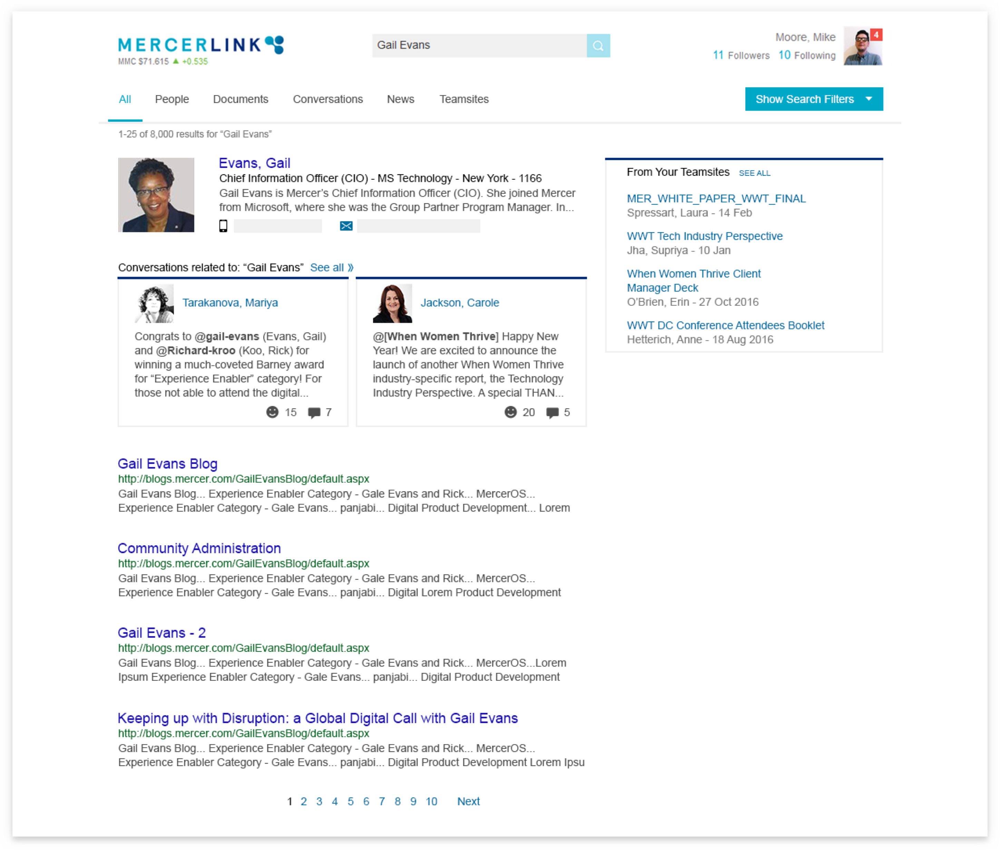

Mid-fidelity Mockup Examples
Mid-fidelity mockups were used to get general user feedback. The team used these designs to do informal user testing.


Content-aware wireframes show how the structure of the search tool was simplified. Hierarchy was added to the overall structure of the page and new components were developed to give more prominence to frequently accessed destinations.
Wireframes were designed by the team web platform manager, Mike Moore. I did a usability audit of the wireframes and used them to design mid-fidelity mockups. Shown left to right: a social feed, a team site, a profile page
Mid-fidelity mockups were used to get general user feedback. The team used these designs to do informal user testing.
I worked closely with global technology teams to prototype, design, and test new components. We added these components to the company material design kit.
A beta version of the design was released before launch. Testers were asked to take a survey and leave feedback. Many users reported improved functionality even though only the interface had changed.
"The new experience returned 10x the number of relavent options as the exact same search I had just performed under the old search. The new results seemed to contain more, or maybe only, relevant U.S. resources where prior searches required looking through global links."
"It seems to bring up documents/pages that are more relevant and more recent. It is also handy that it calls out which documents are internal only versus client ready, and the type of document."
"...the current new search function is far more intuitive than the current one."
"...better results, easier to use...Well done!"
The final result was clean, contemporary search interface that put a spotlight on content.

Cards nested within results pages surface relevant content. Cards help users distinguish between content types, such as social mentions and site results in the exampe above.

An alternative card interface for documents and people content makes it easier to browse results accurately.
News, cotacts, and sales content related to searches now appear on results pages. This helps users make connections between results and consider new avenues for sales.
Before the redesign
After the redesign